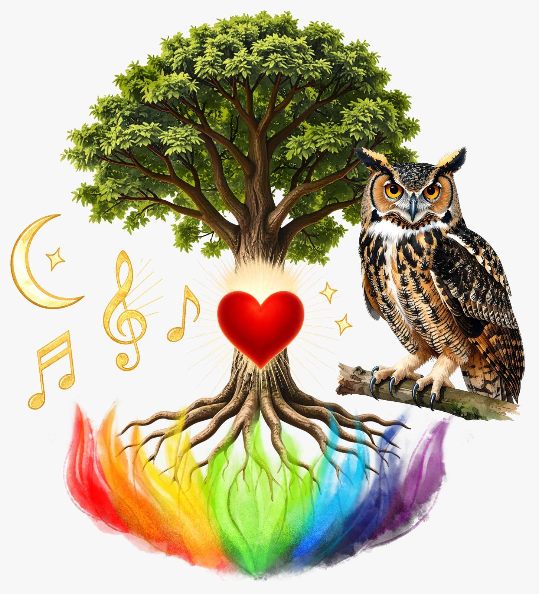
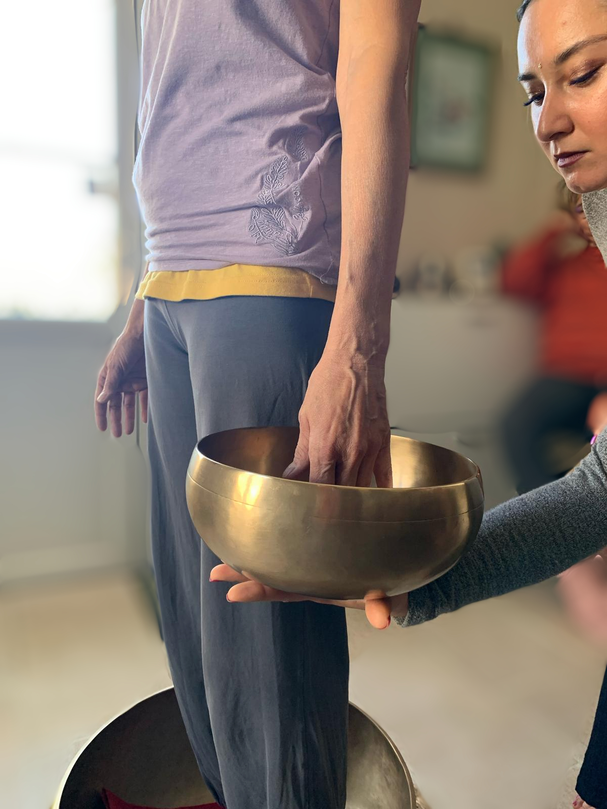
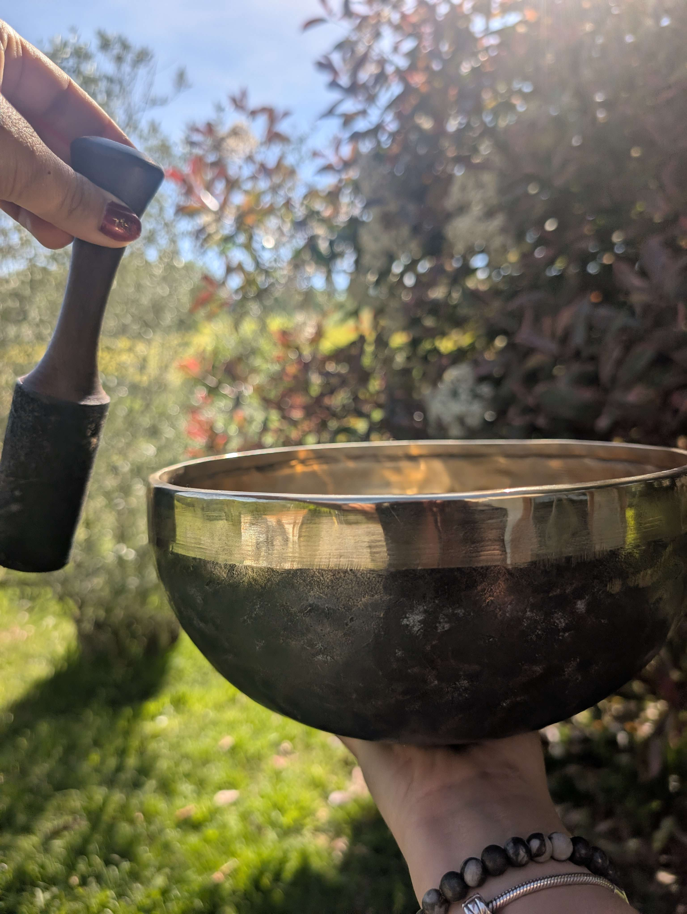

Un voyage vibratoire au cœur de soi-même...
Réserver mon moment de détente →Mélodie de l’Âme
Quand le son devient chemin de reconnexion

Mélodie de l’Âme est née d’une écoute profonde du vivant et d’une conviction intime : chaque être porte en lui sa propre note juste. Nous sommes faits de vibrations, de rythmes, de souffles et de silences.
Corps, émotions, pensées et énergie interagissent en permanence, comme les instruments d’une même symphonie. Lorsque l’un de ces espaces se désaccorde, c’est l’ensemble de notre équilibre intérieur qui s’en trouve perturbé.
À travers les sons thérapeutiques, les vibrations des instruments et le toucher conscient, je vous accompagne dans un processus de réaccordage intérieur, en douceur et dans le respect de votre rythme. Chaque séance devient une expérience unique, une parenthèse hors du temps, façonnée selon votre sensibilité, votre histoire et ce que vous êtes prêt(e) à accueillir ou à transformer.
Mon accompagnement soutient l’intelligence naturelle du corps et de l’âme, pour vous permettre de retrouver votre rythme, votre équilibre, votre harmonie profonde… et, en essence, votre propre mélodie intérieure.
Parcours & intention
Quand accompagner devient une évidence

Aussi loin que je me souvienne, j’ai toujours ressenti cet élan naturel d’accompagner et de soutenir celles et ceux qui m’entourent. La sonothérapie s’est imposée à moi comme une évidence : un langage universel, subtil et profond, qui s’adresse à chacun.
Je me suis d’abord formée aux bols tibétains et aux protocoles vibratoires spécifiques, avant d’enrichir ma pratique avec les gongs, le tambour, les diapasons, les soins énergétiques et la connexion au monde animal.
Aujourd’hui, j’unis ces outils dans une approche intuitive et respectueuse, nourrie par la nature, les cycles du vivant et les traditions ancestrales.
La Sonothérapie
Accueillir, relâcher, remettre en mouvement

Dans un quotidien souvent rythmé par le stress, les émotions accumulées et les épreuves de la vie, il arrive que le corps et l’esprit se ferment progressivement.
Certains événements, certaines tensions ou certains chocs laissent des empreintes. Elles peuvent créer des blocages — physiques, émotionnels ou plus subtils — dont l’impact n’est pas toujours conscient, mais qui se manifeste dans l’énergie, le moral ou l’élan vital.
La sonothérapie propose une approche douce et profonde pour favoriser la relaxation, le lâcher-prise, la gestion du stress et la gestion de la douleur. Grâce aux vibrations et aux fréquences d’instruments tels que les bols tibétains, les bols de cristal, le tambour ou les diapasons, le corps et le système nerveux sont invités à relâcher les tensions et à retrouver un état de détente profonde.
Ce travail vibratoire aide à dénouer en douceur ce qui était figé, à libérer ce qui a besoin de l’être et à restaurer une circulation plus fluide — dans le corps, dans les émotions et dans l’élan de vie.
Idéal pour les personnes en recherche de bien-être, de détente et d’équilibre émotionnel.